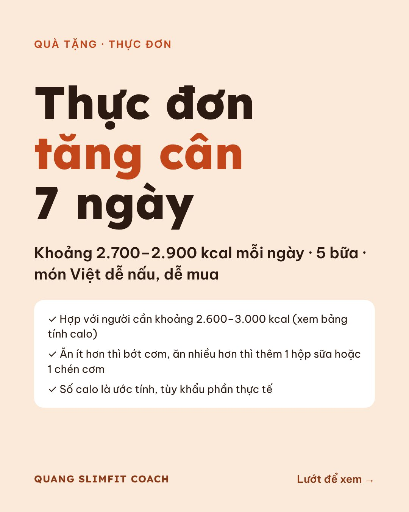
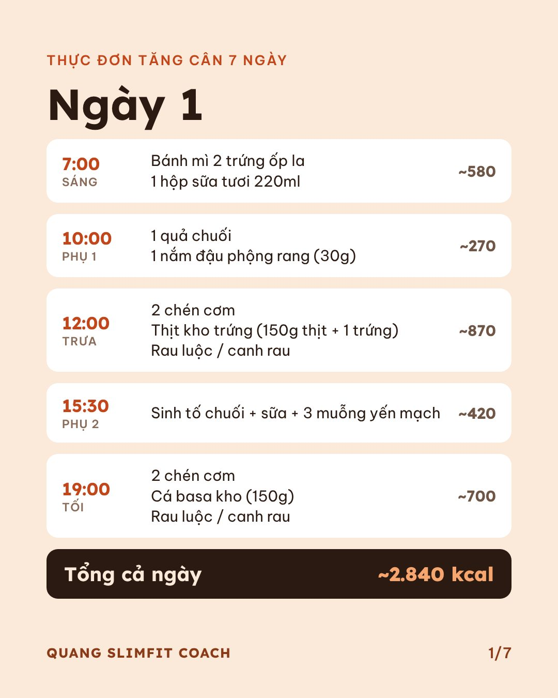
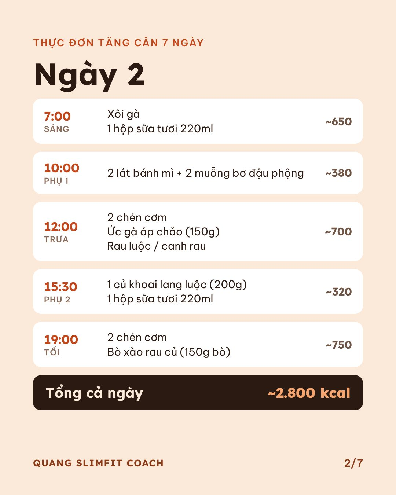
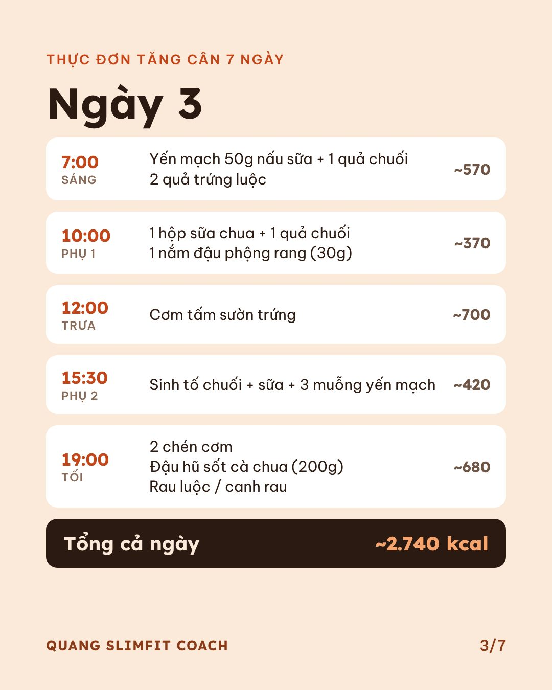
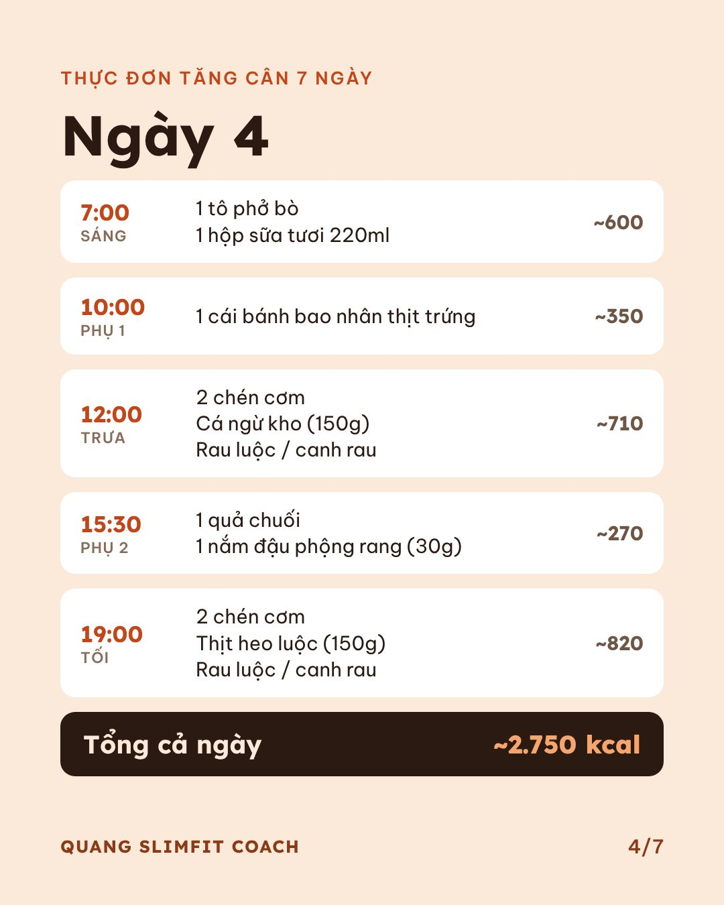
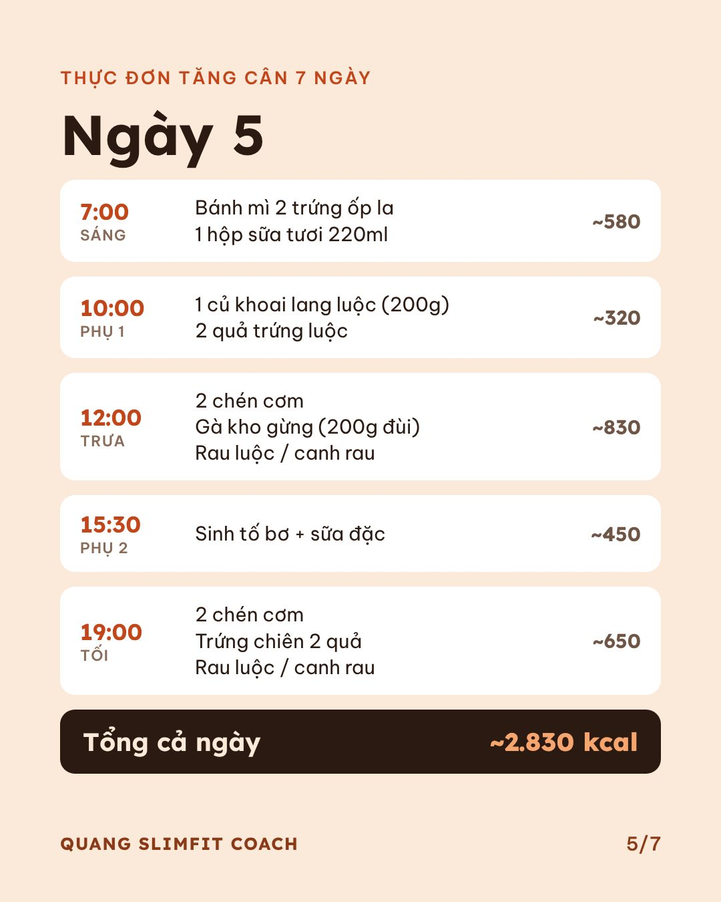
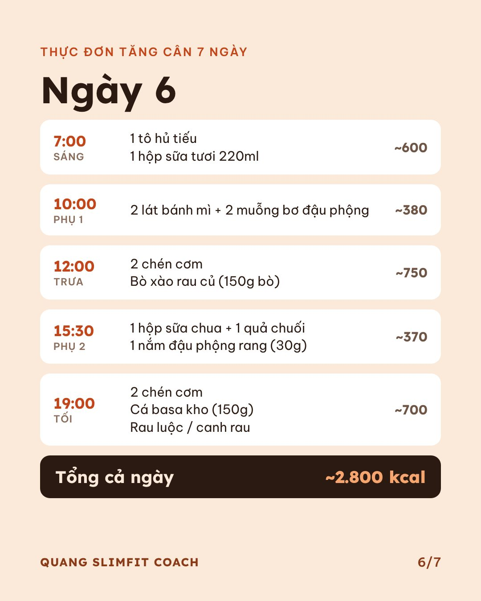
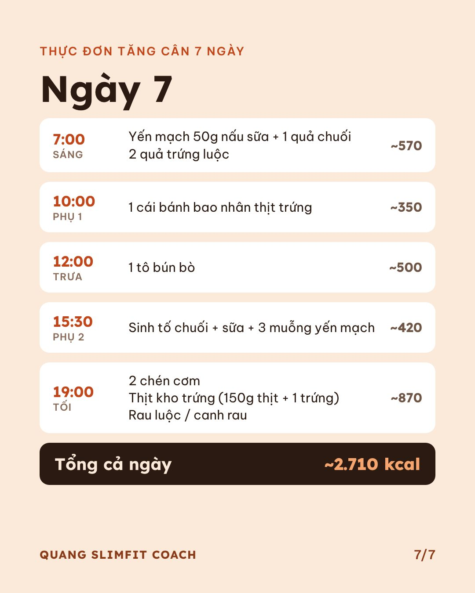

5 bữa mỗi ngày, khoảng 2.700–2.900 kcal, món Việt dễ nấu, dễ mua. Muốn lưu thì nhấn giữ vào ảnh rồi chọn lưu ảnh.








Tính calo cho riêng bạn →Nhập chiều cao, cân nặng để biết bạn cần ăn nhiều hay ít hơn thực đơn này.Số calo là ước tính, tùy khẩu phần thực tế. Nếu bạn có bệnh lý, hãy hỏi ý kiến bác sĩ.